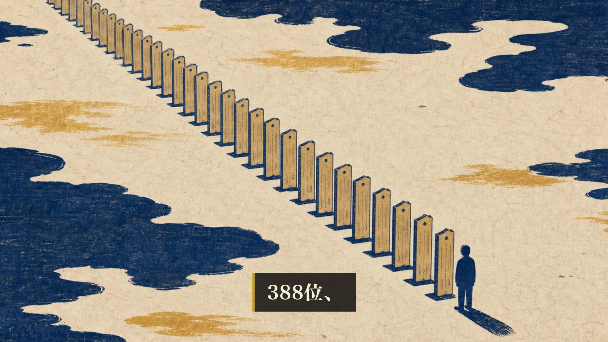
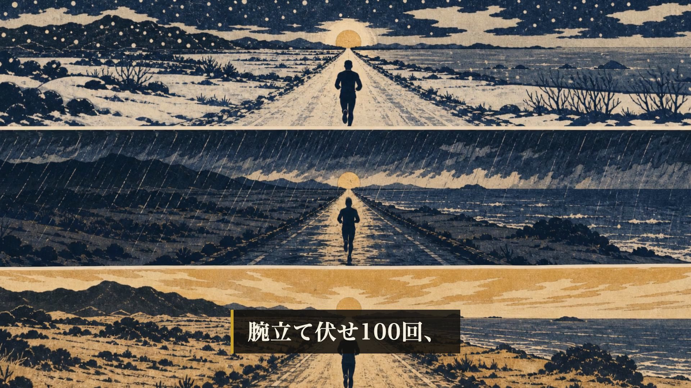

HaQei / アニメと易経 — 第45話 通し視聴（3種承認の最後）
数字表記まで直しました。これで公開準備へ進んでいいですか
ワンパンマン×豊（ほう） ／ 8分37秒 ／ 台本96点 ／ mix検査 PASS（警告0） ／ 公開枠 2026-08-04 04:00
完成動画（プレビュー）
数字表記（今回の指摘）


ルールは docs/format_v2.md「数字の表記」に明文化し、preflightに機械チェックも追加しました（量の数字が漢数字なら警告／数字の読みが未登録なら警告）。爻の呼称（六本の線・三番目の線）・爻辞の引用・慣用（一撃・二人）は漢数字のままで素通りすることを実測確認済みです。
冒頭（3回書き直したもの）
炎上を3日で鎮めた人に、みんなで拍手していました。私はその拍手をしながら、先月自分がつぶした火種のことを考えていました。誰にも言っていない、小さい火種です。
言えば、負け惜しみに聞こえます。だから黙っていました。防いだ、という仕事には、見せられるものが何も残らない。3000年前の本に、この残らなさだけを書いた形があります。今日は、その話です。
絵の流れ

機械検査
| 項目 | 実測 |
|---|---|
| シーン境界の黒落ち | 0件 / 30境界 |
| 音のピーク | -4.0dB |
| 幕間BGM | -38.0dB |
| 尺 | 516.9秒（期待517.4秒） |
| TTS読み誤り | 0件 / 31シーン（388位のカタカナ指定で解消） |
| 字幕同期 | 31シーン PASS |
| 台本の独立採点 | 96点（両ゲート通過） |
| 識別監査（法務） | 29枚すべて「不明」 |
判断してください
A — 公開準備へ進む。概要欄を新しい冒頭・数字表記に合わせて更新し、8月4日4:00の予約（非公開＋予約・公開ボタンは押しません）へ。
B — まだ直す。時刻か箇所を指定してください。